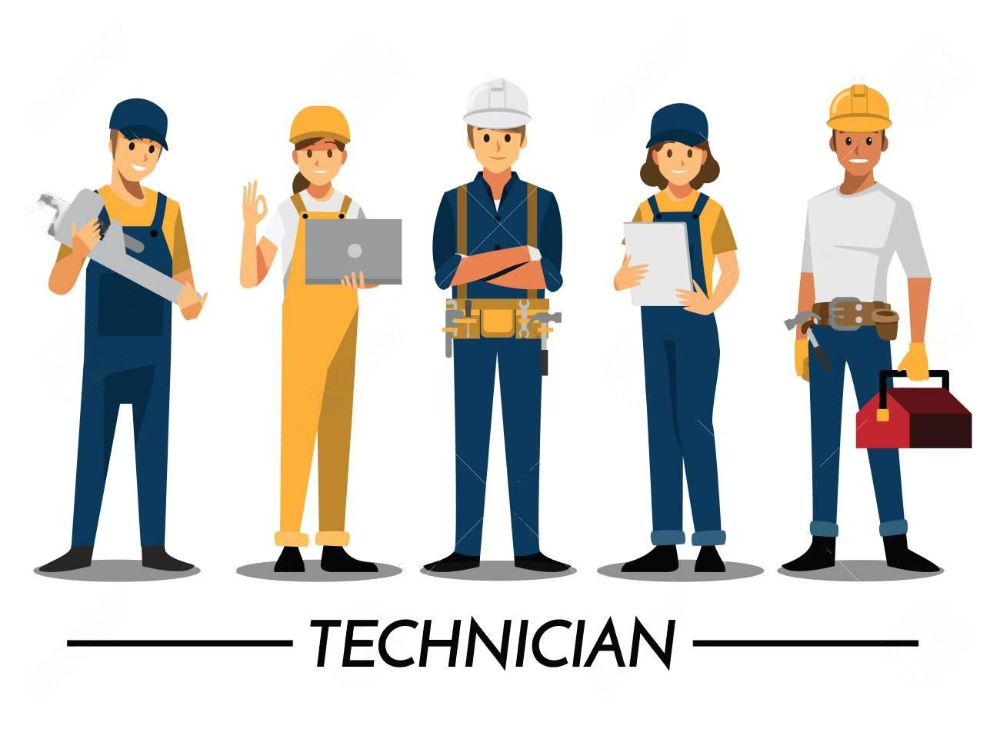
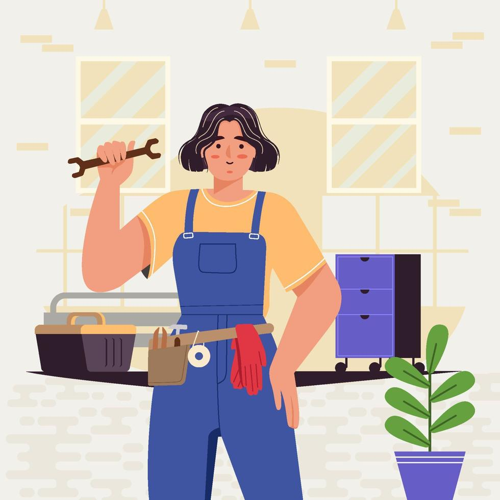
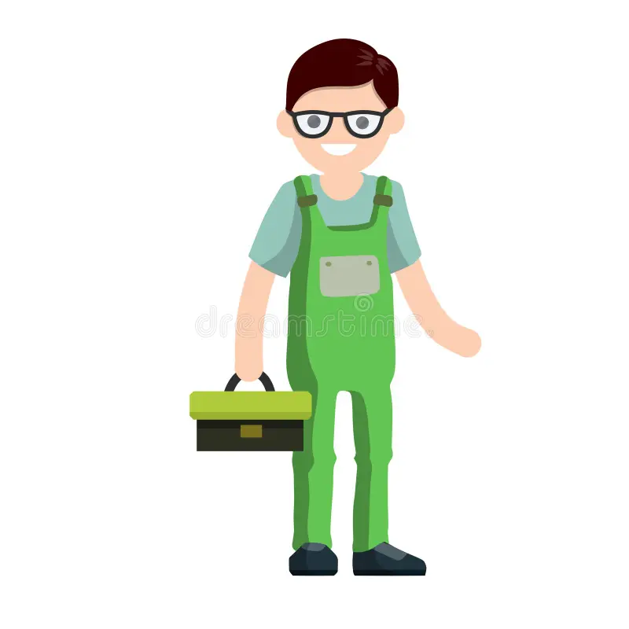

Nosotros

System32
Bienvenidos a nuestro equipo, donde la pasión por la tecnología y el
compromiso con la excelencia se unen para ofrecerte un servicio excepcional en el mundo de la
reparación
de computadoras. Con un equipo diverso y altamente capacitado, estamos aquí para resolver tus
problemas
informáticos con profesionalismo y dedicación.
Integrantes
Maria
Apasionada por la informática desde una edad temprana, María ha acumulado una amplia experiencia
en
reparación de computadoras a lo largo de los años. Su dedicación la llevó a completar cursos
especializados en hardware y software, convirtiéndola en una experta en diagnóstico y solución
de
problemas.
Juan
Con una sólida formación en ingeniería informática, Juan es el cerebro detrás de muchas de
nuestras soluciones técnicas más innovadoras. Su creatividad y habilidad para pensar fuera de la
caja lo convierten en un recurso invaluable para resolver incluso los desafíos más complejos.

Luisa
Graduada en Ingeniería en Sistemas, Luisa aporta una combinación única de habilidades técnicas y
conocimientos en administración de sistemas. Su enfoque meticuloso y su atención al detalle
garantizan que cada reparación se realice con la más alta calidad y eficiencia.
Carlos
Especializado en seguridad informática, Carlos es nuestro experto en protección contra amenazas
cibernéticas. Con una sólida comprensión de las últimas técnicas de hacking y malware, se
asegura de que tus dispositivos estén protegidos contra cualquier riesgo en línea.

Pedro
Con una amplia experiencia en servicio al cliente, Pedro es la cara amigable detrás de nuestro
equipo técnico. Su habilidad para comunicarse claramente con nuestros clientes garantiza que
comprendan cada paso del proceso de reparación y se sientan cómodos confiándonos sus
dispositivos.
En System32, nos enorgullece contar con un equipo diverso y altamente capacitado que está
listo para abordar cualquier desafío que se presente. Ya sea que necesites una simple reparación o una
solución técnica avanzada, estamos aquí para ayudarte en cada paso del camino.
--Equipo de System32--